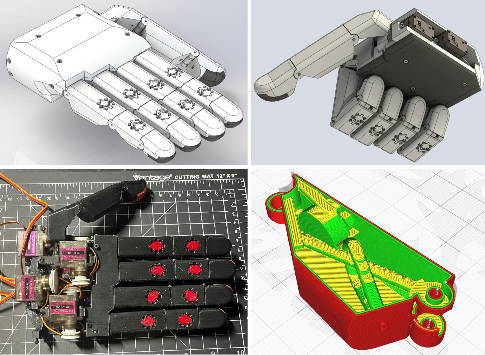
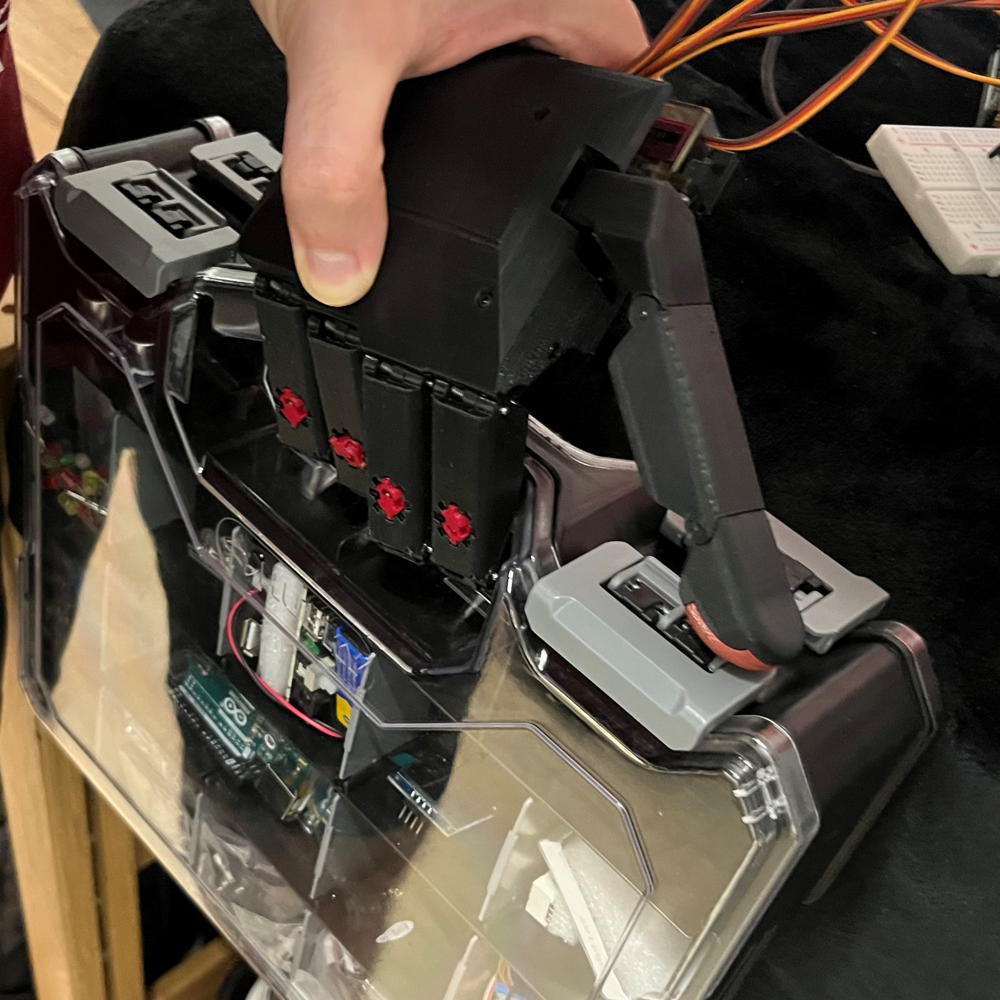
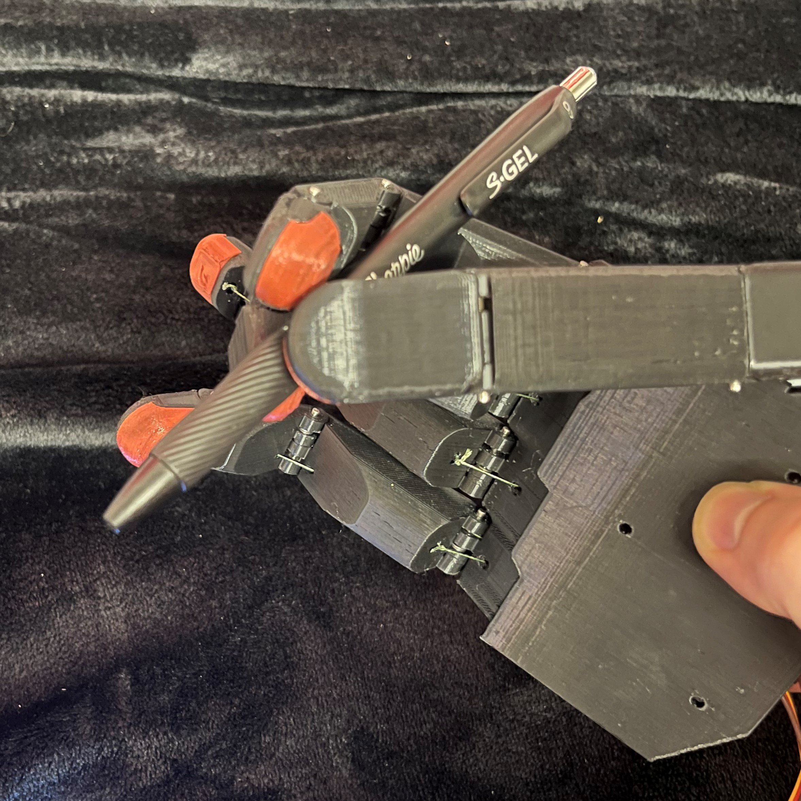
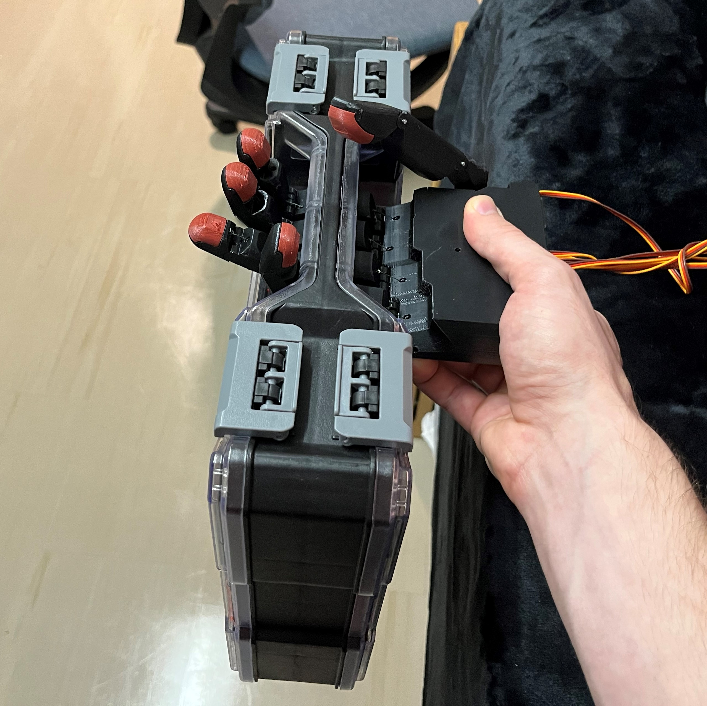

I started this project as a part of my involvement in the WPI Bionics Club. There was a finger design challenge that I decided to continue during the summer. I also wanted to practice using Solidworks to help earn certifications later.
Through this project, I wanted to learn the differences between Solidworks and Inventor during the design process, and I wanted to start dabbling in PCB design. Designing electronic systems is where I have the least robotics experience, and this project will require some unique components, so I hope to learn the most from this portion. I particularly want to learn how to read raw sensor data without the help of premade libraries.
I started with going through several finger iterations to reach a point I was satisfied with based on my design goals. This is where I've spent a majority of my time on this project so far. I went through six distinct iterations with a few tweaks before starting the next iteration. Almost all components that make up the finger are designed exclusively for the advantages of 3D-printing.
After going through all the finger iterations, I developed the thumb through two iterations before finally designing the base of the hand. This is the final design:




Overall, I'm happy with the design. It gives me a strong base to work on my electronics skills and functions well. However, I'd like it to be stronger. It can pinch small, useful objects and grasp objects up to five pounds (max tested so far), which doesn't quite meet my design objective. The servos work well from a position-control perspective, but they lack the ability to produce enough force when closing. The fingers can complete one open and close cycle in about 0.8 seconds, the hand looks rather natural (the thumb positioning is the oddest part), and it has the desired range of motion. The servos don't always close as far as they should, this could be from the library code implementing an anti-stall feature that triggers whenever there's too much resistance against the servo's motion. It could also be a lack of current output from the batteries. Additionally, the interior geometry forces it to be 3D-printed, which works well, but the joints are weak. During stress tests, the finger currently snaps at the first joint on the base side. With all this in mind, there is additional work I'd like to do.
In the future, I plan to develop an electronics system with myoelectric sensors to make control much simpler. The goal would be to have this all contained inside the palm as well (minus the sensors). The current hand design is a bit weak, so once the electronics are complete, I may develop a left hand with a different actuation method. This hand would likely be slower but stronger because it would use linkages and a linear actuator. This would allow me to practice developing linkages, experiment with sensors inside the finger pads as there wouldn't be strings running through them, and try to actuate the proximal and intermediate phalanges individually to improve grip strength.